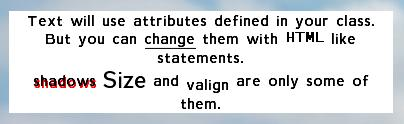

VBS Displays
Defines the block height

Introduction
Displays are a way to create custom graphical user interfaces (GUIs) for missions or addons, in order to present relevant information to the player, or to act as a selection tool, to decide further actions.
They can range from simple message boxes, to complex, multi-layered and conditional menus, which are fully controlled by the developer.
Since the naming for the different types of displays is sometimes a bit confusing (even in some of the script commands), here's the definition as used in the documentation:
Displays: Any user-created screen element.
Dialogs: A display that interrupts normal user actions. It can be interactive (e.g. to push a button or enter text), and only one dialog at a time can be shown. (Often used interchangeably with "Displays".)
HUDs: A display that doesn't interfere with normal user actions. Cannot be interactive, and multiple HUDs can be displayed at the same time. (Sometimes referred to as "resources".)
Controls: Individual components in a display that have specific looks or functions (e.g. buttons, sliders or text boxes).
Usage
For missions, displays are defined in the Description.ext file, and for addons they are defined in the addon's respective config file.
To keep either of those files to a manageable size, it is possible to put the display definitions into a separate file, and to then include it via the #include command.
Changes to the description.ext file, while the mission is still open in the editor, are only applied once the mission is saved or re-loaded. Just restarting the preview will not load the new version of the file!
Position and dimension values (x, y, w, h), as well as font sizes, are relative to the screen (i.e. not pixel values), normally ranging from 0.0 to 1.0 (for a 4:3 screen ratio). An x position of 0 indicates the left edge of the screen, and an x position of 1 is the right edge. A width (w) of 0.1 would set a control's width to one-tenth of the overall screen width. (Other screen ratios will have different ranges - see the SafeZones article for an in-depth explanation.)
Some data types use a different syntax in config files than they do in scripts (e.g. Array and Boolean). See the specific Category Data Types explanations for details.
A complete list of display-related scripting functions is available in the Interactions - User Dialogs.
Dialogs
A dialog is the parent class of an interactive display, and contains one or more Controls.
It can have any name, and is referred to by that name when it is opened in-game via the createDialog command.
Multiple, different dialogs can be defined in the config file (as long as they have different names), but only one can be displayed at a time. If one dialog is already open when another one is created, the previous one will be hidden until the second one is closed.
A dialog is closed by either pressing the <Esc> key, or by executing the closeDialog command.
To reference the dialog use the findDisplay command.
Properties
|
Name |
Type |
Required |
Remark |
|
idd |
Yes |
A unique ID number of the dialog. |
|
|
movingEnable |
Yes |
Whether the dialog can be moved or not (if enabled, one of the dialog controls must have the 'moving' property set to 1 so it becomes the "handle" the dialog can be moved with). |
|
|
Controls |
Class or Property arrays |
No |
Contains classes (or class names) of all foreground Controls shown in this dialog. The first entry in this array will be the control that has focus when the dialog is loaded. |
|
ControlsBackground |
Class or Property arrays |
No |
Contains classes (or class names) of all background Controls shown in this dialog. The sequence in which the controls are listed will decide their z-index (i.e. the last ones will on top of the first ones). |
|
Objects |
Class or Property arrays |
No |
Contains classes (or class names) of all Dialogs Object shown in this dialog. |
|
tooltipDelay |
No |
Sets the delay in seconds before a tooltip is displayed when hovering over a control. Setting the delay to 0 will make the tooltips appear instantly. Optional, if not specified the delay is 1.2 seconds. (Introduced in 3.7) |
|
|
onLoad |
No |
Command to execute when dialog is first loaded (see Reference List) |
|
|
onUnload |
No |
Command to execute when dialog is closed (see Reference List) |
Some event handlers ('onLoad' & 'onUnload') have been included in this list as an example. Further ones can be added in the same manner, and are documented in the Reference List list.
Example
A minimalistic example, displaying a single line of text, could be created like this:
|
description.ext |
dialog.sqf |
class Dlg { |
// opens the dialog (named "Dlg")
|
HUDs
Regular dialogs are used in situations where the user will stop his normal actions, and concentrate on filling out (or examining) the displayed components, and then continue with his previous task.
For situations where a display should be shown continuously, while the user performs his normal tasks, a "HUD" can be created. Its main difference to a dialog is that it will not impede the player's actions, and that it can only display information, but not receive any (i.e. the user cannot click any of the displayed controls, or enter data).
HUDs are defined as a sub-class under RscTitles, and can contain the same controls as a regular dialog (even though interactive controls like buttons or text entry fields wouldn't make much sense in a HUD).
To display a HUD, use the titleRsc or cutRsc command, with the HUD's class name.
To remove it, execute the same command that was used to display it, but with "Default" as the class name.
If HUD elements should be modified while being displayed, a different method to regular dialogs has to be used to get the display object, as findDisplay will not work with HUDs.
To get a reference to the HUD itself (similar to what findDisplay returns), the HUD must be stored in a globally accessible location when it is created (i.e. during the Reference List). Typically this is done by using a global variable, but different Namespace could be used for this purpose as well.
onLoad = "tst_hud = _this select 0"; // we can now use 'tst_hud' to point to the HUD
Be aware that any HUD displays are destroyed when the editor is opened, so one should editorLoad.2C editorUnload this event, so that the HUD can be restored, once the editor is closed again.
Properties
|
Properties |
|||
|
Name |
Type |
Required |
Remark |
|
idd |
Yes |
The unique ID number of this display. Can always be -1 for HUDs, as findDisplay doesn't work with them. |
|
|
Controls |
Class or Property arrays |
No |
Contains classes (or class names) of all foreground Controls shown in this dialog. The first entry in this array will be the control that has focus when the display is loaded. |
|
ControlsBackground |
Class or Property arrays |
No |
Contains classes (or class names) of all background Controls shown in this dialog. The sequence in which the controls are listed will decide their z-index (i.e. the last ones will on top of the first ones). |
|
Objects |
Class or Property arrays |
No |
Contains classes (or class names) of all Dialogs Object shown in this dialog. |
|
duration |
Yes |
After how many seconds the HUD should be closed again. Use a very large number (e.g. 999999) to make it "infinite". |
|
|
fadeIn |
No |
How many seconds it should take for the HUD to fade in. Case-sensitive! |
|
|
fadeOut |
No |
How many seconds it should take for the HUD to fade out after the 'duration' has been reached. Case-sensitive! |
|
Example
|
description.ext |
dialog.sqf |
// MUST be in RscTitles |
// create the HUD
|
Controls
Controls are the actual visible elements inside a display.
Many different types of controls are available in VBS, to be able to support different functionalities, e.g. simple blocks of color, text fields for reading or entering, buttons, sliders, listboxes, checkboxes, maps, etc.
Each control type has different capabilities and different properties.
The common properties are shown in the list below, and for type-specific properties, refer to the detailed page for each type (as listed in the Control Type Details section.
The different script commands that can be used to interact with controls can be found in Interactions - User Dialogs.
Control definitions
There are two ways of defining controls inside a display class.
Either enclose all controls within the Controls class, or define them separately, and then refer to their names in the Controls array.
(The same applies to the ControlsBackground and Objects group.)
|
Controls as child classes |
Controls as array elements |
class MyDialog { |
class MyDialog { |
Properties
The following properties are used in most control types.
Any properties specific to a certain control type will be listed in their Control Types.
Properties that are marked as "required" will cause an error message to come up if not defined (even though the dialog may still work, using some default values).
The "Script" column shows the command that can be used to change the property (this requires the control to have an IDC defined).
|
Name |
Type |
Required |
Remark |
Script |
|
idc |
Yes |
A unique ID number of the control (must exist, otherwise control won't be displayed). |
n/a |
|
|
type |
Yes |
The kind of control to create (e.g. text or button). Normally defined via a Constants. |
n/a |
|
|
style |
Yes |
Display style of control, e.g. how to align text, or whether to draw borders. Normally defined via a Constants. |
n/a |
|
|
moving |
No |
whether the dialog will be moved if this control is dragged (should be set in a background control) |
n/a |
|
|
x |
Yes |
Left edge of control, relative to either the parent control or the screen (0...1, see SafeZones for details). |
||
|
y |
Yes |
Top edge of control, relative to either the parent control or the screen (0...1, see SafeZones for details) |
||
|
w |
Yes |
Width of control (0...1, see SafeZones for details) |
||
|
h |
Yes |
Height of control (0...1, see SafeZones for details) |
||
|
font |
(Yes, if control displays text) |
Name of font to use. See the Available Typefaces article for possible values. |
||
|
sizeEx |
(Yes, if control displays text) |
Defines the block height (or "Em") of the text to be output. This height includes any ascenders or descenders the font may have, and the actual cap height (e.g. of the letter "H") is normally around 70% of the block height. In the attached image the light gray area indicates the block height. Has no effect on images. |
||
|
timer |
No |
Specifies how many seconds after the control has been opened, the Reference List event handler should fire. |
- |
|
|
toolTip |
No |
Hint popup that is displayed after the mouse has been hovering over the control for a while. |
||
|
tooltipColorBox |
No |
Color of tooltip border. |
||
|
tooltipColorText |
No |
Color of tooltip text. |
||
|
tooltipColorShade |
No |
Color of tooltip background. |
Best Practices
In order to improve the readability of dialog definitions, it is suggested to use constants for common properties, and to create base classes from which to inherit individual controls.
These definitions are normally kept in a separate file, that is then .23include in the dialog's config file.
A file with the most common definition is available here.
Constants
Constants are .23include used for common properties.
They make the definitions more readable; e.g. instead of style=2 you can use style=ST_CENTER, and it will be immediately obvious that the text is supposed to be centered (instead of having to remember that a "2" means centering).
The constants below are the standard definitions for type and style properties, but further constants can be added by the user (e.g. for font names), and used in the same manner.
Control types
#define CT_STATIC 0
#define CT_BUTTON 1
#define CT_EDIT 2
#define CT_SLIDER 3
#define CT_COMBO 4
#define CT_LISTBOX 5
#define CT_TOOLBOX 6
#define CT_CHECKBOXES 7
#define CT_PROGRESS 8
#define CT_HTML 9
#define CT_STATIC_SKEW 10
#define CT_ACTIVETEXT 11
#define CT_TREE 12
#define CT_STRUCTURED_TEXT 13
#define CT_CONTEXT_MENU 14
#define CT_CONTROLS_GROUP 15
#define CT_SHORTCUT_BUTTON 16
#define CT_XKEYDESC 40
#define CT_XBUTTON 41
#define CT_XLISTBOX 42
#define CT_XSLIDER 43
#define CT_XCOMBO 44
#define CT_ANIMATED_TEXTURE 45
#define CT_OBJECT 80
#define CT_OBJECT_ZOOM 81
#define CT_OBJECT_CONTAINER 82
#define CT_OBJECT_CONT_ANIM 83
#define CT_LINEBREAK 98
#define CT_USER 99
#define CT_MAP 100
#define CT_MAP_MAIN 101
#define CT_LISTNBOX 102
#define CT_ADV_TREE 107
#define CT_SELECT_SCROLLBAR 110
#define CT_STATEBOX 112
#define CT_SECTION_VIEWER 113
Control styles
// Static styles
#define ST_LEFT 0 // Left aligned text
#define ST_RIGHT 1 // Right aligned text
#define ST_CENTER 2 // Center aligned text
#define ST_SINGLE 0 // Single line textbox
#define ST_MULTI 16 // Multi-line textbox (text will wrap, and newline character can be used). There is no scrollbar, but mouse wheel/arrows can scroll it. Control will be outlined with a line (color = text color).
#define ST_TITLE_BAR 32 // Light gray background with 3D border
#define ST_PICTURE 48 // 'Text' property is interpreted as an image path.
#define ST_FRAME 64 // Transparent background with 2D border and text in upper left edge.
#define ST_BACKGROUND 80 // Gray background with 3D border.
#define ST_GROUP_BOX 96 // Light gray with with 2D border.
#define ST_GROUP_BOX2 112 // Gray with with 2D border .
#define ST_HUD_BACKGROUND 128 // Light green background with rounded corners (like a hint box).
#define ST_WITH_RECT 160 // Transparent background with 2D border.
#define ST_LINE 176 // A line is drawn between the top left and bottom right of the control (color = text color), with transparent Background.
#define ST_SHADOW 256 // Text or image is given a shadow (V1.x).
#define ST_NO_RECT 512 // When combined with ST_MULTI, border is suppressed.
#define ST_KEEP_ASPECT_RATIO 2048 // Used with pictures, to keep its aspect ratio.
#define ST_CODE 4096 // Prevents the control from flipping when the UI flips in RTL languages (by rightToLeftInput = 1)
// Slider styles
#define SL_VERT 0 // Vertical
#define SL_HORZ 1024 // Horizontal
// Listbox styles
#define LB_TEXTURES 16 // Removes all extra border lines from listbox, leaving only a gradient scrollbar. Useful when LB has a painted background behind it.
#define LB_MULTI 32 // Allows multiple elements of the LB to be selected (by holding Shift / Ctrl)
Inheritance
Most controls will look very similar (i.e. have similar properties), so, rather than defining each property again, each time another control is created, it is best to have the base properties defined once, and then refer to them, and only change those properties that are unique.
File with base class definition: baseClasses.cpp
//Standard static text.
class RscText {
type = CT_STATIC;
style = ST_LEFT;
idc = -1;
colorText[] = {0, 0, 0, 1};
colorSelect[] = {0, 0, 0, 1};
colorBackground[] = {0, 0, 0, 0};
font = "TahomaB";
sizeEx = 0.028;
text = "";
};
This file is then included ahead of the dialog definition, which can then inherit the defined base classes: description.ext
#include "baseClasses.cpp"
class Dlg {
idd = 20000;
movingEnable = 0;
class Controls {
// we are using the 'RscText' base class to create a new text control
class TXT1 : RscText {
style = ST_CENTER;
idc = 20000;
x = 0.4; y = 0.4;
w = 0.2; h = 0.05;
text = "ONE";
};
// the 2nd text control inherits from the 1st, and only modifies some properties
class TXT2 : TXT1 {
idc = 20001;
y = 0.4;
text = "TWO";
};
};
};
Control Type Details
Detailed descriptions for the different control types can be found in the dedicated control pages:
Dialogs_ActiveText: Clickable text
Dialogs Button: Clickable buttons
Dialogs Checkboxes: Collection of clickable labels (multiple selections allowed)
Dialogs Group: Grouped controls
Dialogs HTML: Display of external HTML file
Dialogs Listbox: Listboxes and Comboboxes
Dialogs Map: Game map
Dialogs Object: 3D Objects
Dialogs PlanView: Building or vehicle plans
Dialogs ProgressBar: Progress bar
Dialogs_Scrollbars: Scrollbars (required for some control types)
Dialogs Slider: Horizontal or vertical scales
Dialogs Statebox: Advanced checkboxes
Dialogs Static: Static text and images
Dialogs StructuredText: Formattable text and images
Dialogs TextBox: Editable text
Dialogs Toolbox: Collection of clickable labels (one selection at a time)
Dialogs Tree: Hierarchical trees
Event Handlers
Dialog events (e.g. clicking the mouse, or pressing a key) can be captured via different event handlers.
The complete list is described in VBS User Interface Event Handlers.
Sounds
Some controls or event can have sounds assigned to them (e.g. as in mission Dialog Sounds.zip).
In order for them to be heard, the volume for "UI sounds" in the "Audio Options" has to be set to an audible level.
Demo Missions
Miscellaneous demo missions are available on the Dialogs, as well as in the individual Control Type Details.